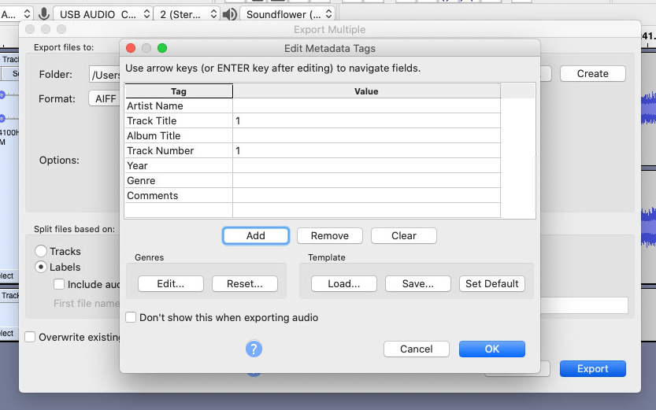

レコードをデジタル化する（前編）の続きです。
今回は、レコードをデジタル化する際に障害となる楽曲メタデータの取得・入力にフォーカスしたいと思います。 Audacityでは保存する際にタグを入力する画面が表示されますが、これを一枚一枚真心を込めて手入力していたら発狂してしまいます。
そこで、ディスコグラフィのデータベースサイトで、CD/レコード/カセットテープ等のマーケットプレイスでもあるDiscogsからデータを取得してみました。
Discogs API
RESTful APIの説明はここで見れます。
基本的な機能を使いたいだけならば、Discogs APIを使うのに特にAPIキーは必要ありません。
サムネイル画像のURLなど、登録をしてpersonal access tokenを取得しuser_tokenとして渡さないと取得できない情報もあり、
user_tokenを渡さないとレスポンスのなかの画像のURLが空白になります。
Discogsにはアプリケーション用のConsumer KeyとConsumer Secretもあるのですが、こちらは使ったことがありません。
自分のpersonal access tokenはDiscogsのSettings -> Developersで確認できます。
DiscogsのAPIを各言語で利用できるようなクライアント/Exampleはいくつかあり、APIのドキュメンテーションに書いてありますが 例えばPythonであればjesseward / discogs-oauth-exampleがあります。
以前はPythonであれば公式が提供するdiscogs / discogs_clientがありましたが、いつの間にかdeprecatedになっていたようです。
実は、過去discogs_clientを使ってPythonでタグをダウンロードするスクリプトを書いていたのですが、 久しぶりに使おうと思ったらdeprecatedになっていたのでJuliaで書き直しました。
RunOut.jl
Registratorには登録していないのですが気が向いたら登録しようと思います。
https://github.com/matsueushi/RunOut.jl
使い方は簡単で、レポジトリをクローンして
$ julia --project
でプロジェクトを有効化します。
そして、ダウンロードしたいリリースのリリースIDを調べます。Discogsにはマスターリリースとリリースという概念があり、 雑に言うとマスターリリースはアルバム・シングル名、リリースはそれぞれのエディション(CD, LP, 初回限定盤、再発など)に対応しています。
そのため、今回調べる必要があるのはマスターリリースではなくリリースのIDです。 CDとLPの収録曲の違いや、初回限定版や再発のボーナストラックなどがありますからね。
例としてMy Bloody ValentineのLoveless のNice Price再発盤であれば、対応するリリースは
https://www.discogs.com/My-Bloody-Valentine-Loveless/release/919364
となるので、idは919364です。
まず、クライアントをセットアップします。
julia> using RunOut
julia> using Pkg
julia> useragent = "RunOut/$(Pkg.project().version) +https://matsueushi.github.io"
"RunOut/0.1.0 +https://matsueushi.github.io"
julia> client = Client(useragent)
Client("RunOut/0.1.0 +https://matsueushi.github.io", nothing)
クライアントはuser_tokenを渡してinstantiateすることもできます。
client = Client(useragent; usertoken="<user token>")
リリース情報を取得するのは非常に簡単です。
julia> release = fetch_release(client, 919364)
Release
id: UInt64 0x00000000000e0744
title: String "Loveless"
resource_url: String "https://api.discogs.com/releases/919364"
artists: Array{Artist}((1,))
artists_sort: String "My Bloody Valentine"
data_quality: String "Needs Vote"
thumb: Nothing nothing
community: Community
companies: Array{Company}((4,))
country: String "Japan"
date_added: TimeZones.ZonedDateTime
date_changed: TimeZones.ZonedDateTime
estimated_weight: UInt64 0x0000000000000055
extraartists: Array{Artist}((7,))
format_quantity: Int64 1
formats: Array{Format}((1,))
genres: Array{String}((1,))
identifiers: Array{Identifier}((5,))
images: Array{Image}((9,))
labels: Array{Label}((1,))
lowest_price: Float64 2.99
master_id: UInt64 0x000000000000173c
master_url: String "https://api.discogs.com/masters/5948"
notes: Nothing nothing
num_for_sale: UInt64 0x000000000000001e
released: String "1998-03-21"
released_formatted: String "21 Mar 1998"
series: Array{Label}((1,))
status: String "Accepted"
styles: Array{String}((3,))
tracklist: Array{Track}((11,))
uri: String "https://www.discogs.com/My-Bloody-Valentine-Loveless/release/919364"
videos: Array{Video}((9,))
year: UInt64 0x00000000000007ce
地道な作業により情報をstructにマッピングしたので、単なるDictより取り扱いが容易になっています。
julia> release.tracklist
11-element Array{Track,1}:
Track("1", "Only Shallow = オンリー・シャロウ", "track", "4:17", nothing, nothing)
Track("2", "Loomer = ルーマー", "track", "2:38", nothing, nothing)
Track("3", "Touched = タッチト", "track", "0:56", nothing, nothing)
Track("4", "To Here Knows When = トゥ・ヒア・ノウズ・ホエン", "track", "5:31", nothing, nothing)
Track("5", "When You Sleep = ホエン・ユー・スリープ", "track", "4:11", nothing, nothing)
Track("6", "I Only Said = アイ・オンリー・セッド", "track", "5:34", nothing, nothing)
Track("7", "Come In Alone = カム・イン・アローン", "track", "3:58", nothing, nothing)
Track("8", "Sometimes = サムタイムズ", "track", "5:19", nothing, nothing)
Track("9", "Blown A Wish = ブロウン・ア・ウィッシュ", "track", "3:36", nothing, nothing)
Track("10", "What You Want = ホワット・ユー・ウオント", "track", "5:33", nothing, nothing)
Track("11", "Soon = スーン", "track", "6:59", nothing, nothing)
そして
julia> save_xml(release, "output")
でoutputフォルダにXMLが生成されるので、あとはXMLをAudacityのメタデータ編集画面でLoad...を押してロードすれば良いです。

まあ、自分以外使う人がいなそうですが。。。
以下は些細な内容ですが実際やっていて気になった点です。
Heading
例えばRadiohaadのOK Computer
のTracklistを見てみると"Enry", “Meeny”, “Miney”, “Mo” といったHeadingの情報が存在することがわかります。
これらは曲には対応していないので、XMLを吐き出す際には無視します。
Trackのpositionがnothingになっているものを飛ばせば良いです。
曲のナンバリング
また、これはiTunes/Music.appに特有の現象かもしれませんが、 Tracklistのpositionが数字ではなく記号やアルファベットが入っている場合(“A”, “A1"など) は曲のpositionとして認識されないため、ナンバリングは自分で行う必要があります。
アーティスト名
Discogsでは、同名別人・別アーティストを末尾にカッコ付き番号をつけて区別しています。 例えば、“BOAT”はアメリカのインディーロックバンド、 “Boat (2)”は日本のロックバンドといった形です。
カッコ付き番号を除去するために、
replace(artist_name, r" \(\d\)$" => "")
を使って置き換えます。
あとがき
Windows用ですが、Mp3tagを使えば同様のことができるようです……こちらの方が簡単かもしれません。